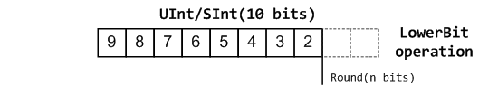
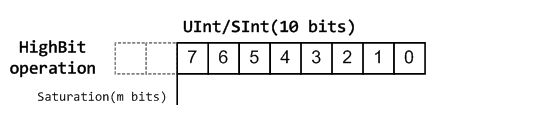

UInt/SInt
UInt/SInt 类型用于表达二进制补码无符号/有符号整数的位向量。他们可以做 Bits 相同的事情，但具有无符号/有符号整数算术和比较。
声明
以下是声明一个整数的语法：（[] 中的内容是可选的）
语法 |
描述 |
|---|---|
UInt[()]
SInt[()]
|
创建一个无符号/有符号整数，自动推断位数 |
UInt(x bits)
SInt(x bits)
|
创建一个 x 位的无符号/有符号整数 |
U(value: Int[,x bits])
U(value: BigInt[,x bits])
S(value: Int[,x bits])
S(value: BigInt[,x bits])
|
创建一个无符号/有符号整数，并将其分配给 ‘value’ |
U”[[size’]base]value”
S”[[size’]base]value”
|
创建一个无符号/有符号整数，并将其分配给 ‘value’
(base: ‘h’, ‘d’, ‘o’, ‘b’)
|
U([x bits,] elements: Element*)
S([x bits,] elements: Element*)
|
创建一个无符号整数，并为其赋值一个由 elements 指定的值 |
val myUInt = UInt(8 bit)
myUInt := U(2, 8 bit)
myUInt := U(2)
myUInt := U"0000_0101" // Base per default is binary => 5
myUInt := U"h1A" // Base could be x (base 16)
// h (base 16)
// d (base 10)
// o (base 8)
// b (base 2)
myUInt := U"8'h1A"
myUInt := 2 // You can use a Scala Int as a literal value
val myBool = Bool()
myBool := myUInt === U(7 -> true, (6 downto 0) -> false)
myBool := myUInt === U(8 bit, 7 -> true, default -> false)
myBool := myUInt === U(myUInt.range -> true)
// For assignment purposes, you can omit the U/S
// which also allows the use of "default -> ???"
myUInt := (default -> true) // Assign myUInt with "11111111"
myUInt := (myUInt.range -> true) // Assign myUInt with "11111111"
myUInt := (7 -> true, default -> false) // Assign myUInt with "10000000"
myUInt := ((4 downto 1) -> true, default -> false) // Assign myUInt with "00011110"
运算符
以下运算符可用于 UInt 和 SInt 类型：
逻辑运算
运算符 |
描述 |
返回类型 |
|---|---|---|
~x |
按位非 |
T(w(x) bits) |
x & y |
按位与 |
T(max(w(x), w(y)) bits) |
x | y |
按位或 |
T(max(w(x), w(y)) bits) |
x ^ y |
按位异或 |
T(max(w(x), w(y)) bits) |
x.xorR |
对 x 的所有位进行异或（缩减运算符） |
Bool |
x.orR |
对x 的所有位进行或操作（缩减运算符） |
Bool |
x.andR |
对 x 的所有位进行与操作（缩减运算符） |
Bool |
x >> y |
算术右移，y : Int |
T(w(x) - y bits) |
x >> y |
算术右移，y : UInt |
T(w(x) bits) |
x << y |
算术左移，y : Int |
T(w(x) + y bits) |
x << y |
算术左移，y : UInt |
T(w(x) + max(y) bits) |
x |>> y |
逻辑右移，y : Int/UInt |
T(w(x) bits) |
x |<< y |
逻辑左移，y : Int/UInt |
T(w(x) bits) |
x.rotateLeft(y) |
逻辑循环左移，y : UInt/Int
y 的宽度被限制为 log2Up(x) 的宽度或更小
|
T(w(x) bits) |
x.rotateRight(y) |
逻辑循环右移，y : UInt/Int
y 的宽度被限制为 log2Up(x) 的宽度或更小
|
T(w(x) bits) |
x.clearAll[()] |
清零所有位 |
修改x |
x.setAll[()] |
将所有的位设置为1 |
修改x |
x.setAllTo(value : Boolean) |
将所有位设置为给定的布尔值（Scala Boolean） |
修改x |
x.setAllTo(value : Bool) |
将所有位设置为给定的布尔值（Spinal Bool） |
修改x |
备注
Notice the difference in behavior between x >> 2 (result 2 bit narrower than x) and x >> U(2) (keeping width)
due to the Scala type of y.
在第一种情况下，“2”是一个 Int 的值（可以看作是“实例细化整数常量”），在第二种情况下，它是一个硬件信号（ UInt 类型）这也可能不是一个常数。
val a, b, c = SInt(32 bits)
a := S(5)
b := S(10)
// Bitwise operators
c := ~(a & b) // Inverse(a AND b)
assert(c.getWidth == 32)
// Shift
val arithShift = UInt(8 bits) << 2 // shift left (resulting in 10 bits)
val logicShift = UInt(8 bits) |<< 2 // shift left (resulting in 8 bits)
assert(arithShift.getWidth == 10)
assert(logicShift.getWidth == 8)
// Rotation
val rotated = UInt(8 bits) rotateLeft 3 // left bit rotation
assert(rotated.getWidth == 8)
// Set all bits of b to True when all bits of a are True
when(a.andR) { b.setAll() }
算术运算
运算符 |
描述 |
返回类型 |
|---|---|---|
x + y |
加法 |
T(max(w(x), w(y)) bits) |
x +^ y |
带进位的加法 |
T(max(w(x), w(y)) + 1 bits) |
x +| y |
添加带有饱和（ saturation）的加数（另请参见 T.maxValue 和 T.minValue） |
T(max(w(x), w(y)) bits) |
x - y |
减法 |
T(max(w(x), w(y)) bits) |
x -^ y |
带进位的减法 |
T(max(w(x), w(y)) + 1 bits) |
x -| y |
带饱和（ saturation）的减法（另请参见 T.minValue 和 T.maxValue） |
T(max(w(x), w(y)) bits) |
x * y |
乘法 |
T(w(x) + w(y)) bits) |
x / y |
除法 |
T(w(x) bits) |
x % y |
求模运算 |
T(min(w(x), w(y)) bits) |
~x |
一元补码运算，按位非（NOT） |
T(w(x) bits) |
-x |
SInt 类型的一元二进制补码。不适用于 UInt。 |
SInt(w(x) bits) |
val a, b, c = UInt(8 bits)
a := U"xf0"
b := U"x0f"
c := a + b
assert(c === U"8'xff")
val d = a +^ b
assert(d === U"9'x0ff")
// 0xf0 + 0x20 would overflow, the result therefore saturates
val e = a +| U"8'x20"
assert(e === U"8'xff")
备注
请注意此处如何进行仿真时判断（使用 ===），而不是前面示例中的细化时判断（使用 ==）。
比较运算
运算符 |
描述 |
返回类型 |
|---|---|---|
x === y |
等价性判断 |
Bool |
x =/= y |
不等价判断运算 |
Bool |
x > y |
大于 |
Bool |
x >= y |
大于或等于 |
Bool |
x < y |
小于 |
Bool |
x <= y |
小于或等于 |
Bool |
val a = U(5, 8 bits)
val b = U(10, 8 bits)
val c = UInt(2 bits)
when (a > b) {
c := U"10"
} elsewhen (a =/= b) {
c := U"01"
} elsewhen (a === U(0)) {
c.setAll()
} otherwise {
c.clearAll()
}
备注
当比较 UInt 值时，允许 “环绕” 行为，即当值超过最大值时，它们将”环绕” 到最小值。在这种情况下，可以使用 UInt 的 wrap 方法。对于 UInt 变量 x、y，如果 x.wrap < y，则如果 x 在环绕意义上小于 y，结果为真。
类型转换
运算符 |
描述 |
返回类型 |
|---|---|---|
x.asBits |
二进制转换为 Bits |
Bits(w(x) bits) |
x.asUInt |
二进制转换为 UInt |
UInt(w(x) bits) |
x.asSInt |
二进制转换为SInt |
SInt(w(x) bits) |
x.asBools |
转换为 Bool 数组 |
Vec(Bool(), w(x)) |
x.asBool |
提取 |
Bool(x.lsb) |
S(x: T) |
将数据转换为 SInt |
SInt(w(x) bits) |
U(x: T) |
将数据转换为 UInt |
UInt(w(x) bits) |
x.intoSInt |
转换为 SInt，扩展符号位 |
SInt(w(x) + 1 bits) |
myUInt.twoComplement(en: Bool) |
如果 |
SInt(w(myUInt) + 1, bits) |
mySInt.abs |
以 UInt 值形式返回绝对值 |
UInt(w(mySInt) bits) |
mySInt.abs(en: Bool) |
当 |
UInt(w(mySInt) bits) |
mySInt.absWithSym |
返回对称的 UInt 值的绝对值，缩小 1 位 |
UInt(w(mySInt) - 1 bits) |
要将一个 Bool、一个 Bits 或一个 SInt 转换为一个 UInt，可以使用 U(something)。要将东西转换为一个 SInt，可以使用 S(something)。
// Cast an SInt to Bits
val myBits = mySInt.asBits
// Create a Vector of Bool
val myVec = myUInt.asBools
// Cast a Bits to SInt
val mySInt = S(myBits)
// UInt to SInt conversion
val UInt_30 = U(30, 8 bit)
val SInt_30 = UInt_30.intoSInt
assert(SInt_30 === S(30, 9 bit))
mySInt := UInt_30.twoComplement(booleanDoInvert)
// if booleanDoInvert is True then we get S(-30, 9 bit)
// otherwise we get S(30, 9 bit)
// absolute values
val SInt_n_4 = S(-3, 3 bit)
val abs_en = SInt_n_3.abs(booleanDoAbs)
// if booleanDoAbs is True we get U(3, 3 bit)
// otherwise we get U"3'b101" or U(5, 3 bit) (raw bit pattern of -3)
val SInt_n_128 = S(-128, 8 bit)
val abs = SInt_n_128.abs
assert(abs === U(128, 8 bit))
val sym_abs = SInt_n_128.absWithSym
assert(sym_abs === U(127, 7 bit))
位提取
所有位提取操作均可用于读取一个位/一组位。与其他 HDL 一样，提取运算符也对 UInt / SInt 的一部分赋值。
运算符 |
描述 |
返回类型 |
|---|---|---|
x(y: Int) |
静态访问第 y 位 |
Bool |
x(y: UInt) |
访问第 y 位，这里y为可变的信号 |
Bool |
x(offset: Int, width bits) |
固定地选择偏移量和宽度， |
Bits(width bits) |
x(offset: UInt, width bits) |
选择偏移量可变和宽度固定的信号， |
Bits(width bits) |
x(range: Range) |
访问Bits的 范围 。例如：myBits(4 downto 2) |
Bits(range.size bits) |
x.subdivideIn(y slices, [strict: Boolean]) |
将x分割为y片，y: Int |
Vec(Bits(…), y) |
x.subdivideIn(y bits, [strict: Boolean]) |
将 x 分割为 y 位的多个切片，y: Int |
Vec(Bits(y bit), …) |
x.msb |
访问 x 的最高有效位（最高索引，SInt 的符号位） |
Bool |
x.lsb |
访问 x 的最低有效位（索引 0） |
Bool |
mySInt.sign |
访问最高符号位，仅适用于 SInt。 |
Bool |
一些基本示例：
// get the element at the index 4
val myBool = myUInt(4)
// assign element 1
myUInt(1) := True
// index dynamically
val index = UInt(2 bit)
val indexed = myUInt(index, 2 bit)
// range index
val myUInt_8bit = myUInt_16bit(7 downto 0)
val myUInt_7bit = myUInt_16bit(0 to 6)
val myUInt_6bit = myUInt_16bit(0 until 6)
// assign to myUInt_16bit(3 downto 0)
myUInt_8bit(3 downto 0) := myUInt_4bit
// equivalent slices, no reversing occurs
val a = myUInt_16bit(8 downto 4)
val b = myUInt_16bit(4 to 8)
// read / assign the msb / leftmost bit / x.high bit
val isNegative = mySInt_16bit.sign
myUInt_16bit.msb := False
分割细节
两个 subdivideIn 函数的所有参数都有一个可选参数 strict 参数（即 subdivideIn(slices: SlicesCount, strict: Boolean = true) ）。如果 strict 为 true，则如果输入无法等分，将引发错误。如果设置为 false，最后一个元素可能比其他（大小相等）元素小。
// Subdivide
val sel = UInt(2 bits)
val myUIntWord = myUInt_128bits.subdivideIn(32 bits)(sel)
// sel = 3 => myUIntWord = myUInt_128bits(127 downto 96)
// sel = 2 => myUIntWord = myUInt_128bits( 95 downto 64)
// sel = 1 => myUIntWord = myUInt_128bits( 63 downto 32)
// sel = 0 => myUIntWord = myUInt_128bits( 31 downto 0)
// If you want to access in reverse order you can do:
val myVector = myUInt_128bits.subdivideIn(32 bits).reverse
val myRevUIntWord = myVector(sel)
// We can also assign through subdivides
val output8 = UInt(8 bit)
val pieces = output8.subdivideIn(2 slices)
// assign to output8
pieces(0) := 0xf
pieces(1) := 0x5
杂项
与上面列出的位提取操作相反，上述函数不能使用其返回值给原始信号赋值。
运算符 |
描述 |
返回类型 |
|---|---|---|
x.getWidth |
返回位数 |
Int |
x.high |
返回 MSB 的索引（对Int来说是允许的最高索引） |
Int |
x.bitsRange |
返回范围（0 到 x.high） |
范围 |
x.minValue |
x 的最低可能值（例如 UInt 为 0） |
BigInt |
x.maxValue |
x 的最大可能值 |
BigInt |
x.valueRange |
返回 x 的最小到最大可能值的范围（x.minValue 到 x.maxValue）。 |
范围 |
x ## y |
连接Bits，x->高位，y->低位 |
Bits(w(x) + w(y) bits) |
x #* n |
n次重复x并合并 |
Bits(w(x) * n bits) |
x @@ y |
将 x:T 与 y:Bool/SInt/UInt 连接 |
T(w(x) + w(y) bits) |
x.resize(y) |
返回 x 调整大小后的副本，如果位宽变大，则用零填充其他位
对于 UInt 或 SInt（用符号填充）操作, y: Int
|
T(y bits) |
x.resized |
返回自动位宽调整后的 x
根据需要调整大小
|
T(w(x) bits) |
x.expand |
返回 x 并进行 1 位扩展 |
T(w(x)+1 bits) |
x.getZero |
返回类型 T 的新实例，该实例被分配与 x 相同宽度的零值（常量）。 |
T(0, w(x) bits).clearAll() |
x.getAllTrue |
返回类型 T 的新实例，该实例被分配了与 x 宽度相同的常量值。 |
T(w(x) bits).setAll() |
备注
validRange 只能用于最小值和最大值能够保存在32 位有符号整数的情况下。 （这是由于 Scala scala.collection.immutable.Range 类型使用 Int 作为范围描述）
myBool := mySInt.lsb // equivalent to mySInt(0)
// Concatenation
val mySInt = mySInt_1 @@ mySInt_1 @@ myBool
val myBits = mySInt_1 ## mySInt_1 ## myBool
// Resize
myUInt_32bits := U"32'x112233344"
myUInt_8bits := myUInt_32bits.resized // automatic resize (myUInt_8bits = 0x44)
val lowest_8bits = myUInt_32bits.resize(8) // resize to 8 bits (myUInt_8bits = 0x44)
定点小数操作
对于定点小数，我们可以将其分为两部分：
低位运算（舍入方法）
高位运算（饱和运算）
低位运算
关于舍入运算: https://en.wikipedia.org/wiki/Rounding
SpinalHDL中的名称 |
维基百科中的名称 |
API |
数学算法描述 |
返回类型（align=false） |
支持情况 |
|---|---|---|---|---|---|
FLOOR |
RoundDown |
floor |
floor(x) |
w(x)-n bits |
是 |
FLOORTOZERO |
RoundToZero |
floorToZero |
sign*floor(abs(x)) |
w(x)-n bits |
是 |
CEIL |
RoundUp |
ceil |
ceil(x) |
w(x)-n+1 bits |
是 |
CEILTOINF |
RoundToInf |
ceilToInf |
sign*ceil(abs(x)) |
w(x)-n+1 bits |
是 |
ROUNDUP |
RoundHalfUp |
roundUp |
floor(x+0.5) |
w(x)-n+1 bits |
是 |
ROUNDDOWN |
RoundHalfDown |
roundDown |
ceil(x-0.5) |
w(x)-n+1 bits |
是 |
ROUNDTOZERO |
RoundHalfToZero |
roundToZero |
sign*ceil(abs(x)-0.5) |
w(x)-n+1 bits |
是 |
ROUNDTOINF |
RoundHalfToInf |
roundToInf |
sign*floor(abs(x)+0.5) |
w(x)-n+1 bits |
是 |
ROUNDTOEVEN |
RoundHalfToEven |
roundToEven |
不支持 |
||
ROUNDTOODD |
RoundHalfToOdd |
roundToOdd |
不支持 |
备注
RoundToEven 和 RoundToOdd 模式非常特殊，用于一些精度要求较高的大数据统计领域，SpinalHDL 尚不支持。
你会发现 ROUNDUP、ROUNDDOWN、ROUNDTOZERO、ROUNDTOINF、ROUNDTOEVEN、ROUNTOODD 在行为上非常接近，ROUNDTOINF 是最常见的。不同编程语言中的舍入行为可能不同。
编程语言 |
默认舍入类型 |
示例 |
评论 |
|---|---|---|---|
Matlab |
ROUNDTOINF |
round(1.5)=2,round(2.5)=3;round(-1.5)=-2,round(-2.5)=-3 |
四舍五入至±无穷大 |
python2 |
ROUNDTOINF |
round(1.5)=2,round(2.5)=3;round(-1.5)=-2,round(-2.5)=-3 |
四舍五入至±无穷大 |
蟒蛇3 |
ROUNDTOEVEN |
round(1.5)=round(2.5)=2; round(-1.5)=round(-2.5)=-2 |
向偶数舍入 |
Scala.math |
ROUNDTOUP |
round(1.5)=2,round(2.5)=3;round(-1.5)=-1,round(-2.5)=-2 |
永远向正无穷舍入 |
SpinalHDL |
ROUNDTOINF |
round(1.5)=2,round(2.5)=3;round(-1.5)=-2,round(-2.5)=-3 |
四舍五入至±无穷大 |
备注
在 SpinalHDL 中，ROUNDTOINF 是默认的舍入类型 (round = roundToInf)
val A = SInt(16 bits)
val B = A.roundToInf(6 bits) // default 'align = false' with carry, got 11 bit
val B = A.roundToInf(6 bits, align = true) // sat 1 carry bit, got 10 bit
val B = A.floor(6 bits) // return 10 bit
val B = A.floorToZero(6 bits) // return 10 bit
val B = A.ceil(6 bits) // ceil with carry so return 11 bit
val B = A.ceil(6 bits, align = true) // ceil with carry then sat 1 bit return 10 bit
val B = A.ceilToInf(6 bits)
val B = A.roundUp(6 bits)
val B = A.roundDown(6 bits)
val B = A.roundToInf(6 bits)
val B = A.roundToZero(6 bits)
val B = A.round(6 bits) // SpinalHDL uses roundToInf as the default rounding mode
val B0 = A.roundToInf(6 bits, align = true) // ---+
// |--> equal
val B1 = A.roundToInf(6 bits, align = false).sat(1) // ---+
备注
只有 floor 和 floorToZero 可以在没有 align 选项的情况下工作；他们不需要进位位。其他舍入操作默认使用进位位。
round Api
API |
UInt/SInt |
描述 |
返回类型（align=false） |
返回类型（align=true） |
|---|---|---|---|---|
floor |
均支持 |
w(x)-n bits |
w(x)-n bits |
|
floorToZero |
SInt |
等于 UInt 类型的下限 |
w(x)-n bits |
w(x)-n bits |
ceil |
均支持 |
w(x)-n+1 bits |
w(x)-n bits |
|
ceilToInf |
SInt |
等于 UInt 类型的 ceil值 |
w(x)-n+1 bits |
w(x)-n bits |
roundUp |
均支持 |
硬件实现简单 |
w(x)-n+1 bits |
w(x)-n bits |
roundDown |
均支持 |
w(x)-n+1 bits |
w(x)-n bits |
|
roundToInf |
SInt |
最常使用 |
w(x)-n+1 bits |
w(x)-n bits |
roundToZero |
SInt |
等于 UInt 类型的roundDown |
w(x)-n+1 bits |
w(x)-n bits |
round |
均支持 |
SpinalHDL 中等效于 roundToInf |
w(x)-n+1 bits |
w(x)-n bits |
备注
虽然 roundToInf 很常见，但 roundUp 的成本最低，时序也好，几乎没有性能损失。因此，强烈建议在生产环境中使用 roundUp 。
高位操作
函数 |
操作 |
正向操作 |
负向操作 |
|---|---|---|---|
sat |
饱和化 |
当(Top[w-1, w-n].orR)为真时设置为maxValue |
当(Top[w-1, w-n].andR)为真时设置为 minValue |
trim |
丢弃 |
不适用 |
不适用 |
symmetry |
获取对称值 |
不适用 |
最小值 = -最大值 |
对称仅对 SInt 有效。
val A = SInt(8 bits)
val B = A.sat(3 bits) // return 5 bits with saturated highest 3 bits
val B = A.sat(3) // equal to sat(3 bits)
val B = A.trim(3 bits) // return 5 bits with the highest 3 bits discarded
val B = A.trim(3 bits) // return 5 bits with the highest 3 bits discarded
val C = A.symmetry // return 8 bits and symmetry as (-128~127 to -127~127)
val C = A.sat(3).symmetry // return 5 bits and symmetry as (-16~15 to -15~15)
fixTo 函数
UInt/SInt 中提供了两种方法来实现定点小数位宽变化：
在 RTL 工作中强烈建议使用 fixTo 函数，您不需要像上图中的 Way1 那样手动处理进位对齐和位宽计算。
带自动饱和功能的定点数生成函数：
函数 |
描述 |
返回类型 |
|---|---|---|
fixTo(section, roundType, symmetric) |
定点数生成 |
section.size bits |
val A = SInt(16 bits)
val B = A.fixTo(10 downto 3) // default RoundType.ROUNDTOINF, sym = false
val B = A.fixTo( 8 downto 0, RoundType.ROUNDUP)
val B = A.fixTo( 9 downto 3, RoundType.CEIL, sym = false)
val B = A.fixTo(16 downto 1, RoundType.ROUNDTOINF, sym = true )
val B = A.fixTo(10 downto 3, RoundType.FLOOR) // floor 3 bit, sat 5 bit @ highest
val B = A.fixTo(20 downto 3, RoundType.FLOOR) // floor 3 bit, expand 2 bit @ highest